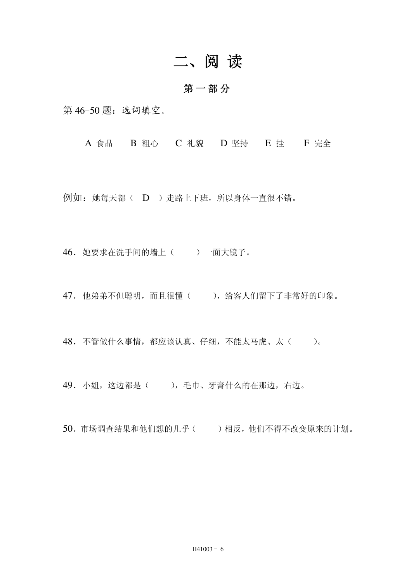
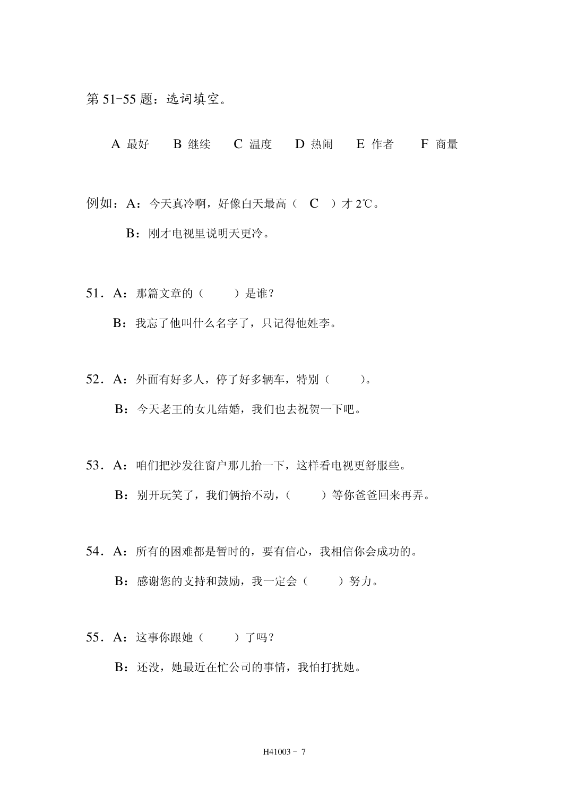
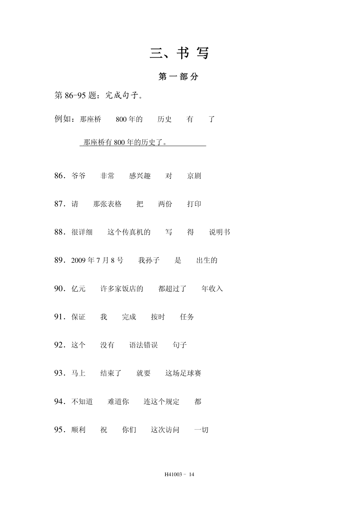
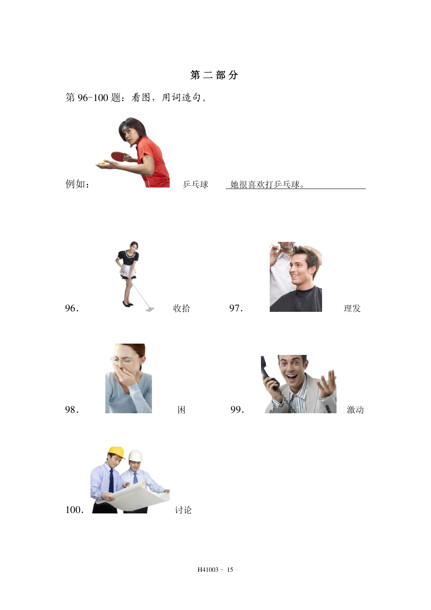

HSK4 – Đề 3 (H41003)
Trang xem trước PDF gốc. Không hiển thị đáp án và không thay đổi SQL.
Từ cho sẵn 96–100: 96: 收拾 · 97: 理发 · 98: 困 · 99: 激动 · 100: 讨论
Trang 7

Trang 8

Trang 15

Trang 16

Trang xem trước PDF gốc. Không hiển thị đáp án và không thay đổi SQL.
Từ cho sẵn 96–100: 96: 收拾 · 97: 理发 · 98: 困 · 99: 激动 · 100: 讨论



